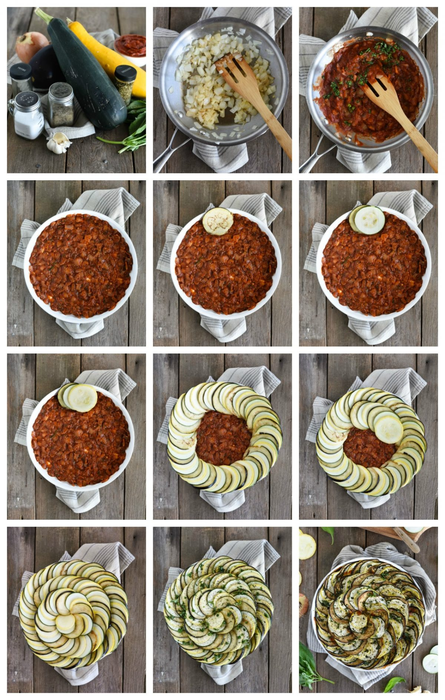

Рататуй Мишеля Герара со свежими овощами
Автор: Елена Гнедовская
Ратату́й (фр. ratatouille; от «rata» — еда в просторечии и гл. «touiller» — мешать, помешивать) — традиционное овощное блюдо прованской кухни из перца, баклажанов и кабачков, во многом похожее на венгерское лечо.
Первый рецепт рататуя встречается в кулинарной книге 1778 года[1]. Возникнув первоначально в районе современной Ниццы, рататуй был блюдом небогатых крестьян, которые готовили его летом из свежих овощей. В оригинальный рецепт входили кабачки, помидоры, перец, лук и чеснок. В современный вариант блюда также добавляют баклажан.
В прованской кухне используются местные специи — прованские травы, которые присутствуют на кухне любого шеф-повара: фенхель, розмарин, тмин, мята, базилик, а также трюфели. Благодаря этим специям каждое блюдо прованской кухни преображается до неузнаваемости. В частности, кулинарный вкус Реми из мультфильма «Рататуй» основан на этих специях. Итало-средиземноморское по содержанию и абсолютно французское по форме блюдо.
Готовить может каждый.
- © повар Огюст Гюсто("Рататуй")

Оригинал рецепта -->
| КАЛОРИЙНОСТЬ | БЕЛКИ | ЖИРЫ | УГЛЕВОДЫ |
| 307 | 7,7 | 17,3 | 31,3 |
| ККАЛ | ГРАММ | ГРАММ | ГРАММ |
ИНГРЕДИЕНТЫ
Примечание: внимательно читайтетрудно-читаемыйили мелкий шрифт на упаковках. Выбирайте свежие продуктов без добавок,красителей и ГМО.
- Сладкий перец ____________________________________ 6 штук
- Чеснок ________________________________________ 8 зубчиков
- Лук репчатый __________________________________ 2 головки
- Баклажаны ______________________________________ 4 штуки
- Цукини ___________________________________________2 штуки
- Помидоры _________________________________________ 6 штук
- Петрушка _____________________________________________ 50 г
- Тимьян ___________________________________________ 2 штуки
- Оливковое масло __________________________________ 100 мл
- Лавровый лист ___________________________________ 2 штуки
- Уксус __________________________________ 2 столовые ложки
- Соль ______________________________________________ по вкусу
- Перец черный молотый __________________________по вкусу
- Лук измельчить. Перцы очистить от семян, порезать кубиками.
- На оливковом масле обжарить лук до мягкости, добавить измельченный чеснок, и как только чеснок даст запах, бросить в сковороду 2 мелко нарубленных помидора, избавленных от кожицы и семян, и перец. К помидорам нужно добавить немного свежего или сухого тимьяна, пару лавровых листов, соли и убавить огонь, чтобы помидоры не жарились.
- Баклажаны, помидоры и кабачки нарезать тонкими ломтиками. Когда помидоры и перец размягчатся, соус готов. Часть соуса выложить на дно противня. Затем красиво уложить ломтики помидоров, чередуя с ломтиками баклажанов и кабачков. Количество слоев может быть любым.
- Поставить противень в духовку, разогретую до 200 градусов, и печь до тех пор, пока верхний слой овощей не приобретет золотистый цвет.
- Перед самым финалом нарубить мелко петрушку, добавить оливкового масла, посолить, поперчить, добавить 2-3 зубчика измельченного чеснока и уксус. Смешать и равномерно распределить по поверхности готового рататуя.



Примечание: "Учимся работать с <HTML>"